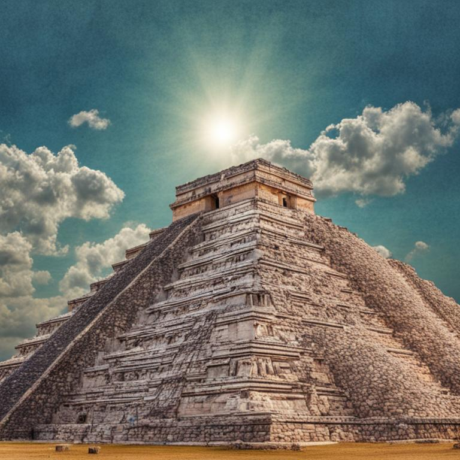
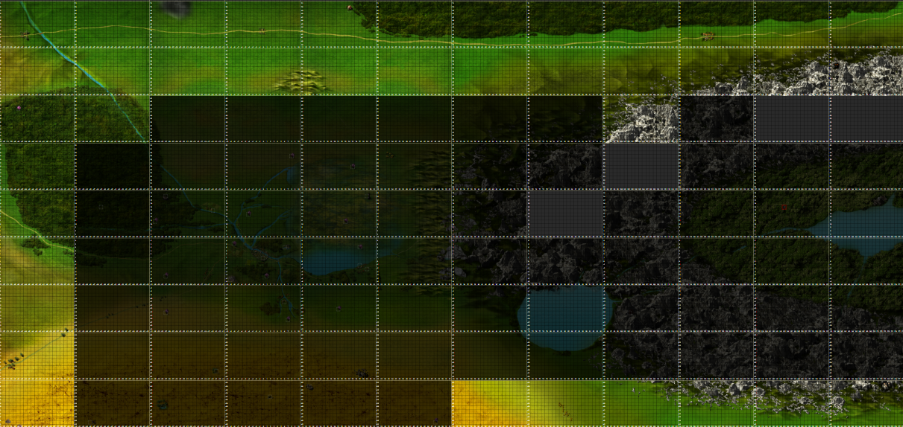

Небольшая заметка-описание контента для среднего уровня – Пирамиды солнца. Рассмотрим особенности пирамид, награду за прохождение и т.д.
- Пирамиды солнца появляются у игроков 30 и старше уровней
- Максимальное количество активных пирамид 3 штуки.
- Пирамиды появляются каждый час с шансом 2%, 3% или 4%, в зависимости от количества активных пирамид (если активно 0 пирамид, шанс 4%, если 1 пирамида – 3% и т.д.). Проверка на появление происходит только у игроков, которые находятся онлайн или которые заходили в игру не более 30 дней назад.
- Пирамиды, простоявшие более 3-х недель, исчезают. Вероятность исчезновения – 10%, проверка каждый час. Не удаляются пирамиды, в которых в момент проверки был игрок.
- Пирамиды не являются локацией Поверхности или Подземелья – в них не действуют бонусы и штрафы за локацию у Следопытов и Рейдеров.
- Если у игрока куплена услуга по поиску пирамид в гильдии Охотников, то при появлении пирамиды игрок получит сообщение с координатами новой пирамиды в личную почту. Также координаты открытых пирамид можно посмотреть в самой гильдии Охотников, если куплена услуга.
- Гильдия Охотников уведомляет только о новых пирамидах, появившихся после начала действия услуги по поиску пирамид. Если у игрока были открыты пирамиды до активации услуги, гильдия не предупредит о них.
- Появляются пирамиды в определенных локациях по краям карты мира (исключая Северные земли и Затерянную Долину)

- Каждая Пирамида представляет собой идеальный случайно сгенерированный лабиринт размером 29 на 29 клеток
- Так как Пирамида – идеальный лабиринт, можно обойти её не рисуя при этом карту – используя, например, правило левой или правой руки. Однако рисование карты позволяет исключать проверку тупиков, близких ко входу в пирамиду (в которых с высокой вероятностью отсутствует сундук).
- В каждой новой пирамиде уникальный случайный лабиринт.
- Состав охранников пирамид может включать один из видов (можно изменить с помощью Золотых песочных часов с Золотой полки магазина на Центральной площади Больших комаров – при этом новый набор монстров будет отличаться от текущего набор):
- Демоны (Хозяин глубин, Ужас глубин, Пламя бездны, Око бездны)
- Животные (Пепельные волки, Подземные трупоеды, Королевские Скорпионы, Кровопийцы)
- Призраки (Проклятье, Призрачный ужас, Тень забвения, Послушник тени, Жрец тени)
- Нежить (Хранитель склепа, Скелет-лучник, Скелет-маг, Вампир-лорд, Кровавый патриарх)
- Минотавры (Минотавр, Минотавр-страж, Минотавр-берсерк, Минотавр-шаман, Минотавр-лорд)
- Количество монстров в бою и их сила зависят от уровня игрока в Пирамиде:
- Количество: 1-2 + 1 за каждые 40 уровней игрока. На 80 уровне в каждом бою будет от 3-х до 4-х монстров.
- Сила монстров: параметры монстров растут на 1.25% каждый уровень игрока выше 50. На 75 уровне параметры монстров будут выше на 31.25%
- Если игрок меньше 75 уровня, то в пирамиде с Призраками не будут появляться Жрецы тени – вместо них появляются Послушники тени.
- В одном из тупиков Пирамиды находится сундук с наградой:
- Пирамида закроется, если открыть сундук
- Сундук расположен в одном из самых дальних тупиков от входа в Пирамиду.
- В сундуке находится один из двух предметов (вероятность 50 на 50):
- Фрагмент Ключа солнца для открытия Храма в Храме Солнца.
- Фрагменты ключей могут содержать от 0 до 4-х эффектов (0-2 положительных и 0-2 отрицательных). Вероятность получить 1 негативный эффект – 70%, 2 – 10%, 0 – 20% (аналогично для положительных)
- Древняя вещь и, с некоторой вероятностью, руна 1-3 типа:
- Древние вещи (одна из списка):
- Шанс 47.5% – вещи от 28 до 50 уровня включительно (не включает в себя вещи из комплектов Белиара и Альматеи)
- Шанс 47.5% – вещи от 41 до 60 уровня включительно (не включает в себя вещи из комплектов Белиара и Альматеи)
- Шанс 5% – вещи от 46 до 60 уровня включительно, включая вещи из комплектов Белиара и Альматеи
- Сила замодов древних вещей соответствует силе замодов с Древних из Старого склепа на легком уровне сложности.
- Руны 1-3 типа
- Не выпадет ничего – 85.55% шанс
- Руна 1 типа – шанс 9.31%
- Руна 2 типа – шанс 2.94%
- Руна 3 типа – шанс 2%
- При наличии бонуса от достижения Расхититель гробниц, вероятность получения рун возрастает (например, при максимально прокаченной ачивке +25%):
- Не выпадет ничего – 83.4% шанс
- Руна 1 типа – шанс 10.4%
- Руна 2 типа – шанс 2.9%
- Руна 3 типа – шанс 3.25%
- Древние вещи (одна из списка):
- Фрагмент Ключа солнца для открытия Храма в Храме Солнца.